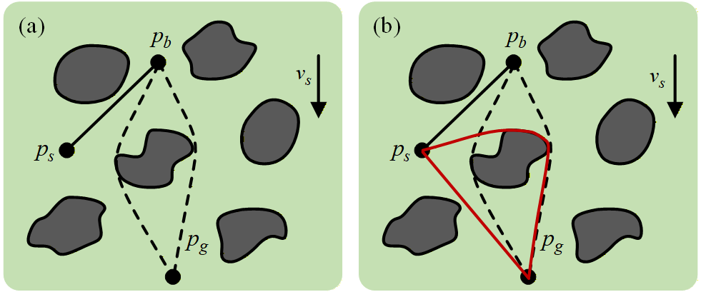
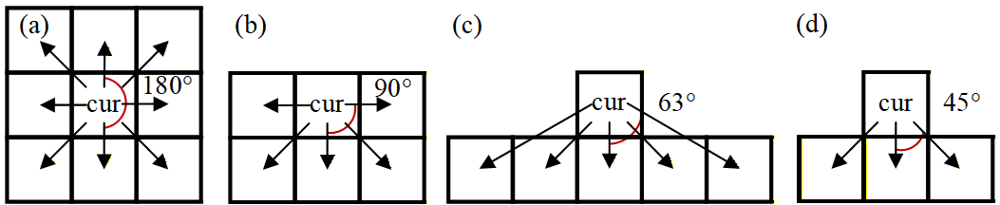
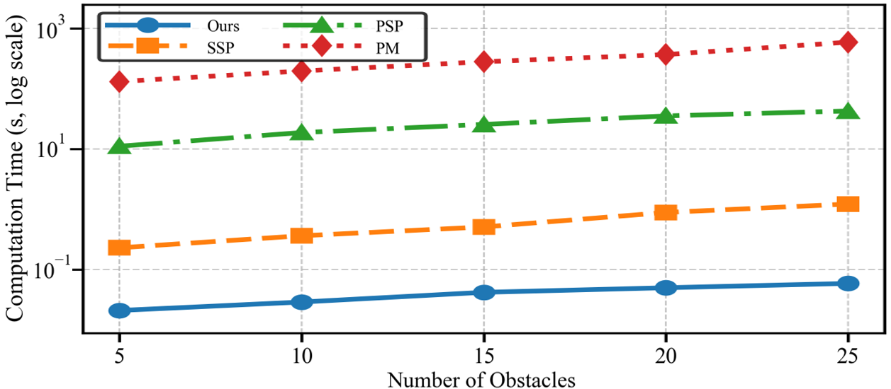
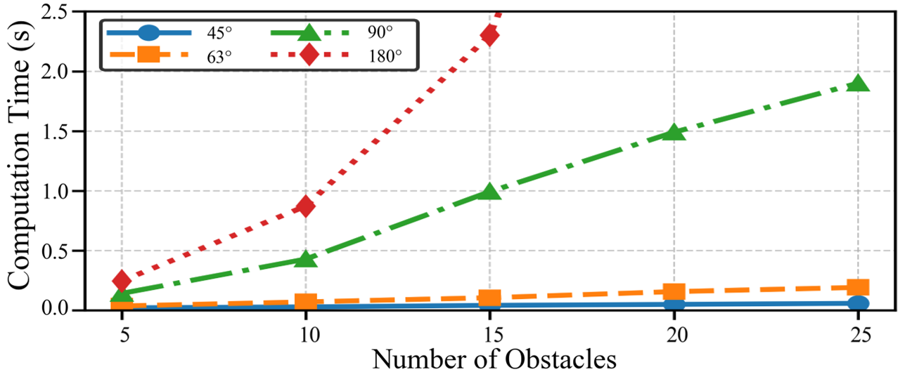
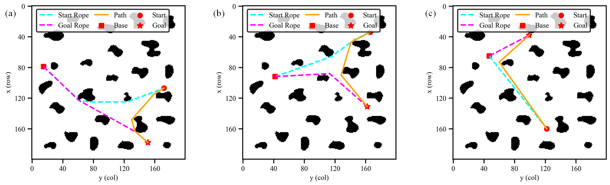

CCO Theorem
A theoretical link between initial tether, terminal tether, and robot path lets the planner verify constraints at the terminal tether state.
The tether enables the robot to operate in extreme environments while imposing constraints on length and the maximum deployment angle in path planning. Conventional path-planning algorithms for tethered robots suffer from tight coupling between constraint evaluation and the search process, resulting in low planning efficiency.
To address this issue, we propose a method based on our constraint consistency and optimality (CCO) theorem. Instead of computing tether constraints during the search for robot paths, we first search for terminal tether configurations and evaluate the constraints only afterward, effectively decoupling constraint evaluation from the search process. In addition, we introduce the Receptive Field Enhanced Dijkstra (RFE-Dijkstra) algorithm, which significantly reduces the search space and further accelerates computation.
Experiments show that the proposed CCO-based planner runs in milliseconds on grid maps with dozens of obstacles, using only 0.17% of the computation time of direct shortest-path search and just 0.014% of that of the method that precomputes the reachable space before searching.
YouTube video link pending.
A theoretical link between initial tether, terminal tether, and robot path lets the planner verify constraints at the terminal tether state.
A receptive-field search prunes infeasible terminal tether configurations before expensive curve-shortening and constraint evaluation.
The method reaches 59.5 ms on 25-obstacle grid maps, with large speedups over direct search and preprocessing baselines.
The theoretical foundation converts constrained robot-path search into feasible terminal tether-configuration selection.
A taut tether is the shortest curve in its homotopy class. Let the initial tether configuration be αs, the robot path be αsg, and the terminal tether configuration be αg. When αs * αsg ≃ αg, the non-overlapping portions of these three shortest curves form a triangular relationship.
This relationship describes how the tether deforms as the robot moves: an intermediate tether configuration either follows the initial or terminal tether over a shared segment, or is obtained through a tangent/straight-line construction inside the triangle.
Constraint consistency: if the robot follows the shortest path in a homotopy class and the terminal tether configuration satisfies the tether length and maximum deployment angle constraints, then every intermediate tether configuration along the path also satisfies these constraints.
Constraint optimality: the globally shortest path satisfying tether constraints must be the shortest curve in one homotopy class. Therefore, the planner can search candidate terminal tether configurations first, check their feasibility once, and then compute the corresponding shortest robot path.
The core idea is to plan terminal tether configurations that satisfy tether constraints instead of searching for robot paths that satisfy tether constraints.


Search begins from the anchor toward candidate terminal tether configurations. The receptive field can shrink from standard 180-degree Dijkstra expansion to the feasible 90-degree range, and in practice toward 45 degrees when constraints permit.
The planner is evaluated on 200 by 200 grid maps with random initial tether configurations and goal positions, and is compared under the same conditions with Selecting the Shortest Path (SSP), Planning the Shortest Path (PSP), and Preprocessing the Map (PM).


